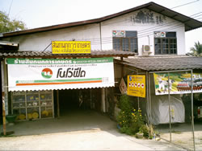

www.Sinkanok.com

จำหน่าย ขาย สุกร สุกรขุน สุกรพันธุ์ สุกรพ่อพันธุ์ สุกรแม่พันธุ์ ลูกสุกร สุกรสายพันธุ์เดนมาร์ก แม่สุกรสองสายพันธุ์ สุกรพันธุ์แท้ พันธุ์แลนค์เรซ พันธุ์ลาร์จไวท์ หมู แม่พันธุ์ พ่อพันธุ์ อาหารสัตว์ โนโว่ รำ ปลายข้าว ข้าวโพด ข้าวโพดป่น อุปกรณ์การเลี้ยงสัตว์ อาหารปลาทุกชนิด อาหารกบ อาหารโค ซีพี
โทรศัพท์ 081-5940730 (08:00 - 17:00 จันทร์-เสาร์) E.mail. info@sinkanok.com
หนังสือ "อาหารล้นโลก: Over Food on the World" | Sinkanok Labs |